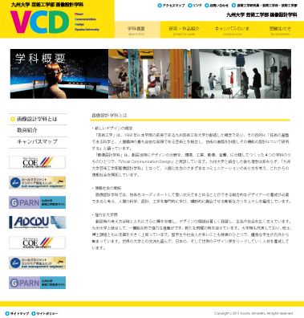
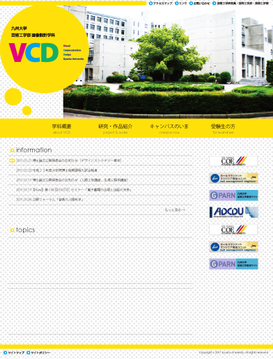

Portfolio * brighter and brighter
 画像設計学科webサイトの提案
画像設計学科webサイトの提案
>> 制作したページを見る
- ・制作期間
- 2011年1月30日〜2月1日
- ・使用ツール
- Illustrator / Flash / Dreamweaver
- ・コンセプト
- 画像設計学科をもっと盛り上げるwebサイト
- ・備考
- 4名でのグループ制作
担当：企画 / コーディング / Flash作成
（トップページと学科概要のみ制作）
提案書.pdf（13.6MB）
所属している学科の専用webサイトを作るとしたら、という想定で制作したものです。提案書と、トップページ＋1ページを形にしました。
画像設計学科をもっと盛り上げるwebサイトをコンセプトに、
(1)外から人を呼び寄せて盛り上げる
＝受験生やその親、外部の人に興味を持ってもらう
(2)内から参加・発信して盛り上げる
＝在校生がマメにチェックし、更に参加できるものにする
という二つの視点からビジュアルイメージやコンテンツ内容を考え、提案書を書いています。また、例年の学科の卒業論文集の色として使われている黄色を基調にしました。
 